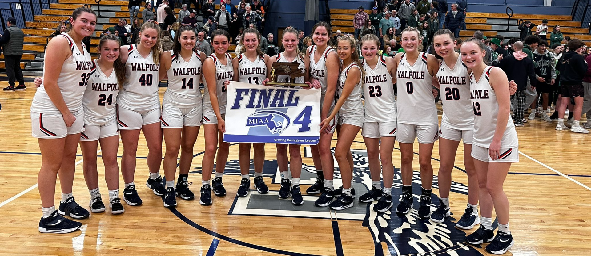
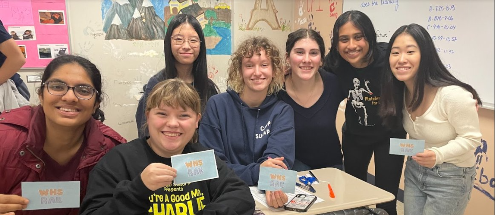

The Visual Arts The art curriculum is designed to develop students'
understanding of art as a visual language.
Through artistic process students will: create -
by conceptualizing and developing ideas,
present - through interpretation, refinement and personal meaning, respond -
by analyzing art to lead to understanding
and appreciation,
and connect - to cultures around them to deepen their understanding of art making.
Courses in Art (read about course descriptions
in the Program of Studies)
Ceramics & Sculpture I
Advanced Ceramics & Sculpture Design I, II, III
& AP 2D Art and Design Drawing and Painting I, II, III
& AP Drawing Printmaking & Mixed Media I,
Printmaking & Mixed Media II Contemporary Art Theory &
Practice Digital Photography Interior Design
The Mathematics curriculum attempts to provide
learning experiences for all students
consistent with their academic abilities,
needs, and aspirations. The program offered
by the Mathematics Department reflects
an awareness that we live in a complex age
in which mathematics plays an increasingly
important role for society and the individual alike.
The intent of the curriculum is to present
mathematics as a useful, exciting, and creative area of study
that can be appreciated, enjoyed,
and mastered by all students. Particular
emphasis is placed on understanding
mathematics with the goal of preparing
students to adapt in a continuously
changing, technical world.
Students will be challenged to achieve
mathematical power through problem solving,
communicating mathematically,
reasoning, and making connections.
The English curriculum is designed to develop the
communication skills essential to students throughout
their personal, academic, and professional lives.
It stresses reading comprehension, essay writing,
vocabulary development, speaking skills, and cultural
literacy. WHS's English curriculum is aligned with
the Massachusetts English Language Arts Framework.
 